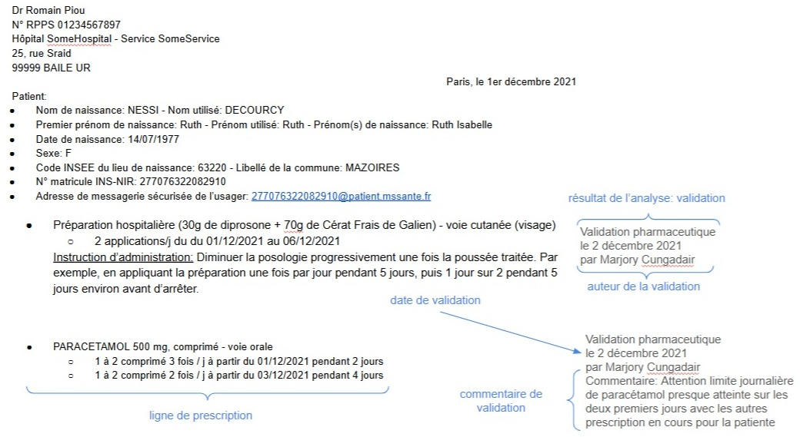

Guide d'implémentation de l'analyse pharmaceutique
0.1.0 - ci-build
FR
Guide d'implémentation de l'analyse pharmaceutique
0.1.0 - ci-build
FR
Guide d'implémentation de l'analyse pharmaceutique - version de développement local (intégration continue v0.1.0) construite par les outils de publication FHIR (HL7® FHIR® Standard). Voir le répertoire des versions publiées
Attention ! la partie analyse pharmaceutique est en cours d'élaboration et n'a pas été éprouvée.
L’analyse pharmaceutique est définie dans le lexique de Pharmacie Clinique 2025 de la SFPC de la manière suivante: “L’analyse pharmaceutique de l’ordonnance (ou de la prescription) ou l’analyse pharmaceutique liée à une demande de médicament ou autre produit de santé à prescription médicale facultative fait partie intégrante de l’acte de dispensation et permet la vérification, des posologies, des doses, des durées de traitement, du mode et des rythmes d’administration, de l’absence de contre-indications, d’interactions et de redondances médicamenteuses. Le contenu d’une ordonnance est défini dans l’article R5132-3. L’analyse pharmaceutique de l’ordonnance peut s’inscrire dans la démarche d’expertise pharmaceutique clinique, dans un objectif commun de détection d’éventuels problèmes lies a la thérapeutique. À ne pas confondre avec le terme «validation pharmaceutique» qui correspond à une action interne à une pharmacie concluant une analyse pharmaceutique, autorisant la délivrance de produits de santé.”
Le processus d’analyse pharmaceutique d’une presctipion comporte donc
Le pharmacien ayant réalisé l’analyse peut ensuite réaliser une optimisation pharmaceutique de la prise en charge médicamenteuse en formulant un avis pharmaceutique.
Cette spécification couvre le partage de données entre systèmes au sein d’une structure de soin à l’issue d’une analyse pharmaceutique. L’analyse pharmaceutique réalisée en officine est principalement au niveau du LGO sans besoin identifié d’échange interopérable avec d’autres systèmes. Elle est hors périmètre de cette version de la spécification.
Dans le contexte hospitalier l’analyse pharmaceutique peut se faire de manière centralisée à la PUI ou décentralisée directement dans le service de soin. Et,pour des raisons opérationnelles, elle peut être réalisée en amont de la dispensation/administration du traitement ou lorsque le traitement a déjà débuté.
L’analyse pharmaceutique se traduit par un avis sur les lignes de prescription analysées. L’avis peut être:
Une Intervention Pharmaceutique (IP) est définie dans le Lexique de Pharmacie Clinique 2025 de la SFPC comme “Toute proposition de modification de la thérapeutique initiée par le pharmacien en lien avec un/des produit(s) de santé. Elle comporte l’identification, la prévention et la résolution des problèmes liés à la thérapeutique chez un patient donné. Chaque Intervention Pharmaceutique (IP) doit être tracée dans le dossier du patient et/ou sur la prescription”.
Une intervention pharmaceutique, dans le contexte hospitalier, comporte:
Une intervention pharmaceutique peut être revue par le prescripteur de la/des ligne(s) de prescription concernée(s) et être:
Elle peut également être acceptée par défaut dans le cas d’une délégation formelle.
Les spécifications sont issues des travaux du groupe de travail Interop’Santé et s’appuient sur:
La validation est rarement matérialisée. On pourrait cependant imaginer ce genre de visa pharmacien sur une prescription papier

L’intervention pharmaceutique dans le contexte hospitalier est outillé par un formulaire de la SFPC

Pour faciliter la compréhension par les professionnels de santé, des modèles métier ont été élaborés pour décrire les données qui constituent le résultat d’une analyse pharmaceutique.
Ces modèles utilisent le formalisme des “modèles logiques” d’HL7, qui permettent de représenter les concepts métier de façon indépendante des contraintes techniques de FHIR. Contrairement aux profils FHIR techniques destinés aux développeurs, ces modèles logiques offrent une vision métier claire et accessible, facilitant le dialogue entre professionnels de santé, éditeurs de logiciels et experts FHIR.
Avantages pour les professionnels de santé :
Modèles disponibles :